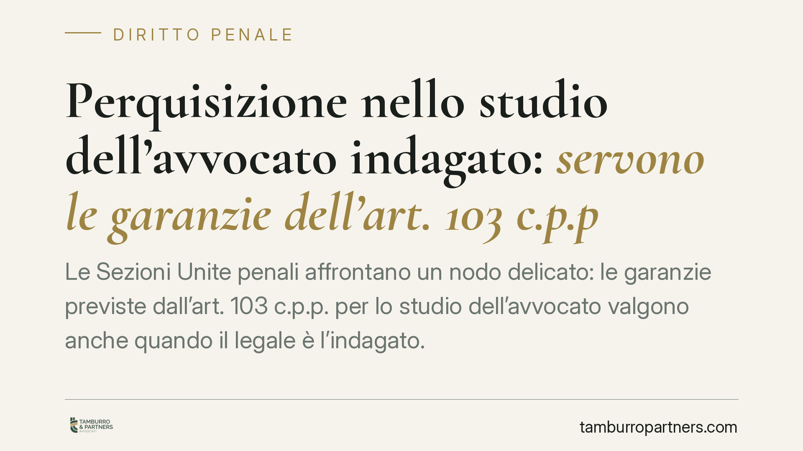

Perquisizione nello studio dell'avvocato indagato: servono le garanzie dell'art. 103 c.p.p.
Le Sezioni Unite penali affrontano un nodo delicato: le garanzie previste dall'art. 103 c.p.p. per lo studio dell'avvocato valgono anche quando il legale è l'indagato. La tutela non protegge solo il professionista, ma soprattutto la riservatezza dei clienti estranei all'indagine e vale anche per gli incarichi civili e amministrativi.

Il caso
Un avvocato viene sottoposto a indagine penale. Gli inquirenti intendono perquisire il suo studio. La domanda è semplice: quando è lo stesso legale a essere indagato, cadono le garanzie particolari che l'ordinamento riserva agli studi forensi, oppure restano in piedi?
Le Sezioni Unite penali della Cassazione hanno optato per la seconda soluzione. Le cautele dell'art. 103 c.p.p. si applicano anche in questa ipotesi. Il motivo è che quelle garanzie non tutelano soltanto la posizione dell'avvocato: proteggono in primo luogo la riservatezza dei rapporti con i clienti, che restano terzi rispetto all'indagine.
> Nota redazionale: al momento della stesura gli estremi completi della pronuncia (numero e anno) non risultano ancora verificabili con certezza. Le affermazioni che seguono riguardano il quadro normativo consolidato dell'art. 103 c.p.p. e il principio di diritto sintetizzato dalle fonti. Prima di ogni utilizzo processuale è necessario reperire il testo integrale della sentenza.
Inquadramento normativo
L'art. 103 c.p.p. contiene una serie di limitazioni alle attività investigative negli studi dei difensori. In sintesi, la norma subordina ispezioni, perquisizioni e sequestri presso lo studio del difensore a condizioni più stringenti rispetto alla disciplina ordinaria, e prevede che tali attività si svolgano con l'intervento di un componente del Consiglio dell'ordine forense del luogo, avvisato preventivamente affinché possa assistervi.
La disposizione tutela anche la corrispondenza tra difensore e assistito e i colloqui difensivi, ponendo un divieto di sequestro e di ogni forma di controllo salvo che si tratti di corpo del reato. La ratio è la protezione del diritto di difesa e del segreto professionale, non un privilegio personale del legale.
Proprio da questa ratio discende il principio affermato dalle Sezioni Unite: se le garanzie servono a proteggere i clienti e la funzione difensiva, la circostanza che l'avvocato sia indagato non le fa venire meno. Diversamente, le carte di decine di assistiti estranei ai fatti resterebbero esposte a un accesso privo di filtri.
Implicazioni pratiche
Occorre distinguere due piani.
Tutela dell'avvocato-persona. L'attività investigativa a suo carico resta possibile. L'indagine non è bloccata: sono disciplinate le modalità con cui può svolgersi negli spazi dello studio.
Riservatezza dei clienti terzi. È questo il bene protetto in via principale. La presenza del rappresentante dell'ordine e le condizioni di legge servono a evitare che l'atto investigativo diretto contro il professionista si trasformi in un accesso indiscriminato ai fascicoli di soggetti estranei.
Un secondo chiarimento rilevante riguarda l'estensione oggettiva delle garanzie. Non si limitano all'attività penale del legale: coprono anche gli incarichi in materia civile e amministrativa. Ciò che rileva è la funzione difensiva in sé, a prescindere dal ramo del contenzioso.
Infine, il profilo sanzionatorio. Il materiale acquisito in violazione delle regole dell'art. 103 c.p.p. è inutilizzabile. Non è una formalità: è il presidio che rende effettiva la garanzia.
Cosa fare in concreto
- Verificare la presenza del rappresentante dell'ordine. All'inizio dell'atto, accertare che sia stato regolarmente avvisato e sia presente il componente del Consiglio dell'ordine forense.
- Far annotare a verbale ogni contestazione. È opportuno far verbalizzare in tempo reale le anomalie procedurali e le riserve, con indicazione precisa di orari e soggetti presenti.
- Segnalare i fascicoli dei terzi. Indicare quali atti riguardano clienti estranei all'indagine, per circoscrivere l'ambito dell'accesso e attivare le tutele sul segreto.
- Documentare l'oggetto dell'apprensione. Chiedere l'elenco dettagliato di quanto acquisito o sequestrato, distinguendo tra corpo del reato e materiale difensivo.
- Valutare le impugnazioni disponibili. In caso di violazioni, considerare gli strumenti per far valere l'inutilizzabilità del materiale e per il riesame del provvedimento.
La pronuncia rafforza un principio spesso frainteso: le garanzie dello studio legale non sono uno scudo per il professionista, ma una tutela della funzione difensiva e dei diritti di chi si affida a un avvocato.
Contributo informativo a cura di Tamburro & Partners Avvocati. Non costituisce parere legale.
Ogni condominio ha una storia a sé.
Se gestisci un'amministrazione e vuoi un confronto su una specifica questione condominiale, scrivi allo studio. Ti rispondiamo entro un giorno lavorativo.